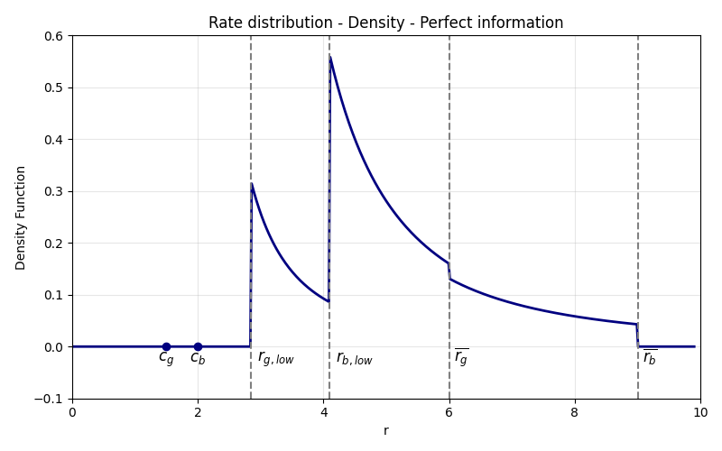

Drivers of Rate Dispersion in Loan Markets
I document substantial unexplained dispersion in interest rates among otherwise similar firms, even when they borrow from the same bank. I use realized firm outcomes to show that rate dispersion reflects in part unobserved differences in borrower risk, in line with bank screening, while the rest is attributable to imperfect competition. I propose a novel model of loan pricing where dispersion reflects both (i) banks' optimal pricing strategy in an imperfectly competitive environment and (ii) credit risk differences when banks acquire informative signals on firms. While screening explains only a small fraction of observed dispersion, I show that it plays a major role in determining surplus sharing between banks and heterogeneous firms, and in limiting the consequences of adverse selection, particularly lowering borrowing costs and reducing credit rationing for safer borrowers.
